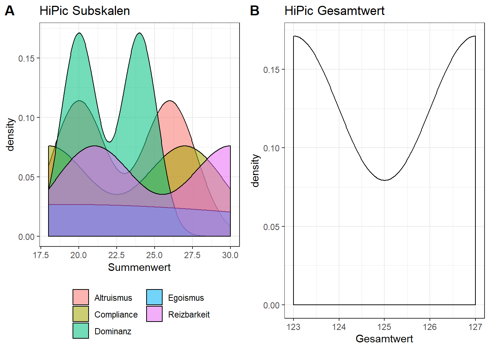
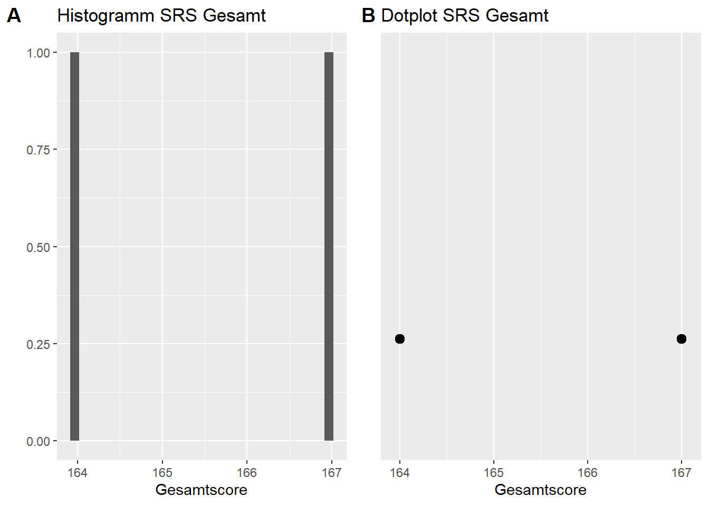

# Benoetigte Packages laden und installieren
#install.packages("lubridate")
#install.packages("data.table")
#install.packages("dplyr")
#install.packages("ggplot2")
#install.packages("corrplot")
#install.packages("ggstatsplot")
#install.packages("rlang")
library(data.table)
library(lubridate)
library(dplyr)
library(ggplot2)
library(corrplot)
library(ggstatsplot)
library(rlang)Die Datensets von dem Fragebogen Screening werden geladen.
screening <- read.csv("Screening.csv", sep=";", colClasses = c(STARTED = "POSIXct",LASTDATA = "POSIXct",SD01_01 = "character"))
# Die Variable SD01_01(Geburtsdatum) wird nicht als Datum erkannt, daher importieren wir sie zunaechst als Character und wandeln sie spaeter um. ## Daten filtern nach beendeten Durchgaengen
# fuer die Verwendung von data.table sicherstellen, dass screening data.table
screening <- as.data.table(screening)
# Anzahl Datenreihen/Teilnehmer
screening[,.N]
# Anzahl beendete Frageboegen
screening[FINISHED == 1,.N]
# nur beendete Frageboegen verwenden
screening <- screening[FINISHED == 1]
# nur Frageboegen mit ID-Angabe verwenden
screening <- screening[ID01_01|ID01_02|ID01_03|ID01_04 != NA]
## Weitere fehlende Werte?
any(is.na(screening))Der Screeningfragebogen wurde für 6 Kinder ausgefüllt, davon sind 6 Fragebögen vollständig. Nur diese Fragebögen werden in die Analyse einbezogen.
## Geschlecht(Variable SD02), 1 = maennlich 2 = weiblich 3 = k.A.
screening$SD02[screening$SD02==1] = "maennlich"
screening$SD02[screening$SD02==2] = "weiblich"
screening$SD02[screening$SD02==3] = "k.A."
table(screening$SD02)
## Alter (Variable SD01_01)
screening[,SD01_01 := as.POSIXct(SD01_01,format = "%Y-%m-%d")]
screening[,age_in_years := round(interval(start = SD01_01, end = LASTDATA) /
duration(num = 1, units = "years"),1)]
# Altersdurchschnitt
screening[,round(mean(age_in_years,na.rm = TRUE),1)]
# Standardabweichung
screening[,round(sd(age_in_years, na.rm = TRUE),2)]
# Altersspanne
screening[,range(age_in_years, na.rm = TRUE)]Der Altersdurchschnitt ist 8.8 (SD = 0.64). Die Altersspanne betrögt 8.2 – 9.4 Jahre.
## data.table "traits" fuer Testscores erstellen
# Fuer Testdatenset IDs zu PID zusammenfuegen (spaetere Teilnehmer haben alle eine PID)
screening <- screening[,PID := .(paste(ID01_01, ID01_02,ID01_03,ID01_04, sep = ""))]
traits <- screening[,.(PID,SD02,age_in_years)]
## Keine Invertierung mehr notwendig: Items mit reverse scoring(4,5,9,11,16,18) werden bereits in SoSciSurvey invertiert.
## Lability/Negativity (Items: 2,4,5,6,8,9,10,11,13,14,17,19,20,22,24)
traits[,ERC_LN := rowSums(screening[,.(ER01_02,ER01_04,ER01_05,ER01_06,ER01_08, ER01_09, ER01_10,
ER01_11,ER01_13, ER01_14, ER01_17, ER01_19, ER01_20, ER01_22,
ER01_24)])]
## Emotion Regulation (Items: 1,3,7,15,16,18,21,23)
traits[,ERC_EmoReg := rowSums(screening[,.(ER01_01,ER01_03,ER01_07,ER01_15,ER01_16, ER01_18, ER01_21,
ER01_23)])] ## Histogramme
ERC_LN_hist <- ggplot(data=traits, aes(traits$ERC_LN)) +
geom_histogram() +
labs( title = "Histogramm", x = " Summenwert", y = "")
ERC_EmoReg_hist <- ggplot(data=traits, aes(traits$ERC_EmoReg)) +
geom_histogram() +
labs( title = "Histogramm", x = "Summenwert", y = "")
## Dotplot
ERC_LN_dot <- ggplot(data=traits, aes(traits$ERC_LN)) +
geom_dotplot() +
labs( title = "Dotplot", x = " Summenwert", y = "") +
scale_y_discrete(labels = "")
ERC_EmoReg_dot <- ggplot(data=traits, aes(traits$ERC_EmoReg)) +
geom_dotplot() +
labs( title = "Dotplot", x = "Summenwert", y = "") +
scale_y_discrete(labels = "")
## Plots fuer Lability/Negativity bzw. Emotion Regulation nebeneinander anzeigen
# Plots fuer Lability/Negativity
combine_plots(ERC_LN_hist, ERC_LN_dot,
ncol = 2, nrow=1,
labels = c("A", "B"),
title.text = "ERC Lability/Negativity",
caption.color = "black") # Plots fuer Emotion Regulation
combine_plots(ERC_EmoReg_hist, ERC_EmoReg_dot,
ncol = 2, nrow=1,
labels = c("A", "B"),
title.text = "ERC Emotion Regulation",
caption.color = "black") ## Items fuer Berechnung der Facetten invertieren (FACETKEY:13,15,16,17,23,26,31,37)
Hipic_Facetkey <- screening[,which(names(screening)=='HP01_01'):which(names(screening)=='HP01_40')]
facet_itemsreverse <- c("HP01_13","HP01_15", "HP01_16", "HP01_17", "HP01_23", "HP01_26", "HP01_31", "HP01_37")
Hipic_Facetkey <- Hipic_Facetkey %>%
mutate_at(facet_itemsreverse, list(~ recode(.,"1"=5, "2" = 4, "3" = 3, "4" = 2, "5"=1)))
## Summenwerte pro Facette berechnen und dem Dataframe "traits" hinzufuegen
# 1. Altruismus/Altruism (B_ALT) (8 Items)
traits[,HiPic_B_ALT := rowSums(Hipic_Facetkey[,(which(names(Hipic_Facetkey)=='HP01_01'):which(names(Hipic_Facetkey)=='HP01_08'))])]
# 2. Entgegenkommen/Compliance (B_COM) (8 Items)
traits[,HiPic_B_COM := rowSums(Hipic_Facetkey[,(which(names(Hipic_Facetkey)=='HP01_09'):which(names(Hipic_Facetkey)=='HP01_16'))])]
# 3. Dominanz/Dominance (B_DOM) (8 Items)
traits[,HiPic_B_DOM := rowSums(Hipic_Facetkey[,(which(names(Hipic_Facetkey)=='HP01_17'):which(names(Hipic_Facetkey)=='HP01_24'))])]
# 4. Egozentrismus/Egocentrism (B_EGO) (8 Items)
traits[,HiPic_B_EGO := rowSums(Hipic_Facetkey[,(which(names(Hipic_Facetkey)=='HP01_25'):which(names(Hipic_Facetkey)=='HP01_32'))])]
# 5. Reizbarkeit/Irritability (B_IRR) (8 Items)
traits[,HiPic_B_IRR := rowSums(Hipic_Facetkey[,(which(names(Hipic_Facetkey)=='HP01_33'):which(names(Hipic_Facetkey)=='HP01_40'))])] ## Items fuer die Berechnung invertieren (DIMENSIONKEY:13,15,16,18-22,24,25,27-30,32-36,38-40)
Hipic_Dimensionkey <- screening[,which(names(screening)=='HP01_01'):which(names(screening)=='HP01_40')]
dimension_itemsreverse <- c("HP01_13","HP01_15", "HP01_16", "HP01_18", "HP01_19", "HP01_20", "HP01_21", "HP01_22",
"HP01_24","HP01_25", "HP01_27", "HP01_28", "HP01_29", "HP01_30", "HP01_32", "HP01_33",
"HP01_34","HP01_35", "HP01_38", "HP01_39", "HP01_40")
Hipic_Dimensionkey <- Hipic_Dimensionkey %>%
mutate_at(dimension_itemsreverse,list(~ recode(.,"1"=5, "2" = 4, "3" = 3, "4" = 2, "5"=1)))
## Gesamtwert Gutmuetigekeit/Benevolance berechnen
traits[,HiPic_Benevolance := rowSums(Hipic_Dimensionkey[,which(names(Hipic_Dimensionkey)=='HP01_01'):which(names(Hipic_Dimensionkey)=='HP01_40')])] ## Moeglichkeit 1: Ein Density-plot fuer alle Subskalen und ein Density-Plot fuer die Gesamtskala (Ein Density-plot eignet sich besser als ein Histogramm, da die Verteilungen fuer die einzelnen Skalen beim ueberinanderlegen besser zu erkennen sind )
# Umwandlung von traits ins Long-format
traits_long_H <- melt(traits,id.vars="PID",measure.vars=c("HiPic_B_ALT","HiPic_B_COM","HiPic_B_DOM","HiPic_B_EGO","HiPic_B_IRR"))
# Density-plot Subskalen
HiPic_sub <- ggplot(data = traits_long_H, aes(x = value, fill = variable)) +
geom_density(alpha = 0.55) +
labs( title = "HiPic Subskalen", x = "Summenwert") +
scale_fill_discrete(labels = c("HiPic_B_ALT" = "Altruismus", "HiPic_B_COM" = "Compliance","HiPic_B_DOM" = "Dominanz","HiPic_B_EGO" = "Egoismus","HiPic_B_IRR" = "Reizbarkeit") ) +
theme_bw() +
theme(legend.position = "bottom", legend.title = element_blank()) +
guides(fill = guide_legend(nrow = 3, ncol = 2))
# Density-plot Gesamtwert
HiPic_ges <- ggplot(data = traits, aes(x = HiPic_Benevolance)) +
geom_density() +
labs( title = "HiPic Gesamtwert", x = "Gesamtwert") +
theme_bw()
# Beide Plots kombinieren
combine_plots(HiPic_sub, HiPic_ges, ncol = 2, nrow=1,labels = c("A", "B"), caption.color = "black")
## Moeglichkeit 2: pro Skala ein Plot
# Umwandlung von traits ins Long-format
traits_long_H2 <- melt(traits,id.vars="PID",measure.vars=c("HiPic_B_ALT","HiPic_B_COM","HiPic_B_DOM","HiPic_B_EGO","HiPic_B_IRR", "HiPic_Benevolance"))
# Plot erstellen
ggplot (data = traits_long_H2, aes(x = value)) +
geom_histogram() +
facet_wrap(~variable, scale = "free", labeller = as_labeller(c("HiPic_B_ALT"="Altruismus", "HiPic_B_COM" = "Compliance","HiPic_B_DOM" = "Dominanz","HiPic_B_EGO" = "Egoismus","HiPic_B_IRR" = "Reizbarkeit", "HiPic_Benevolance" = "Gesamtwert"))) +
labs(title = "HiPic", x = NULL, y = NULL) +
theme_bw()## `stat_bin()` using `bins = 30`. Pick better value with `binwidth`. ## Summenwert pro Subskala berechnen
#1. Soziale Bewusstheit (SRS_SB) Items: 2,7,25,32,45,52,54,56
traits[,SRS_SB := rowSums(screening[,c("A401_02","A401_07", "A402_05", "A402_12", "A403_05","A403_12", "A403_14", "A403_16")])]
#2. Soziale Kognition (SRS_SK) Items: 5,10,15,17,30,40,42,44,48,58,59,62
traits[,SRS_SK := rowSums(screening[,c("A401_05","A401_10", "A401_15", "A401_17", "A402_10","A402_20", "A403_02", "A403_04",
"A403_08", "A403_18","A403_19", "A403_22")])]
#3. Soziale Kommunikation (SRS_SKO) Items: 12,13,16,18,19,21,26,33,35,36,37,38,41,46,47,51,53,55,57,60,61
traits[,SRS_SKO := rowSums(screening[,c("A401_12","A401_13","A401_16","A401_18","A401_19","A402_01","A402_02","A402_06","A402_13","A402_15",
"A402_16","A402_17","A402_18","A403_01","A403_06","A403_07","A403_11","A403_13","A403_15","A403_17","A403_20","A403_21")])]
#4. Soziale Motivation (SRS_SM) Items: 1,3,6,9,11,23,27,34,43,64,65
traits[,SRS_SM := rowSums(screening[,c("A401_01","A401_03","A401_06","A401_09","A401_11","A402_03","A402_07","A402_14","A403_03","A403_24",
"A403_25")])]
#5. Autistische Manierismen (SRS_AM) Items: 4,8,14,20,24,28,29,31,39,49,50,63
traits[,SRS_AM :=rowSums(screening[,c("A401_04","A401_08","A401_14","A401_20","A402_04","A402_08","A402_09","A402_11","A402_19","A403_09","A403_10",
"A403_23")])] traits[,SRS_Gesamt := rowSums(screening[,which(names(screening)=='A401_01'):which(names(screening)=='A403_25')])] ## Einzelne Plots erstellen
SRS_Gesamt_hist <- ggplot(data=traits, aes(traits$SRS_Gesamt)) +
geom_histogram() +
labs( title = "Histogramm SRS Gesamt", x = "Gesamtscore", y = "")
SRS_Gesamt_dot <- ggplot(data=traits, aes(traits$SRS_Gesamt)) +
geom_dotplot() +
labs(title = "Dotplot SRS Gesamt", x = "Gesamtscore", y = "") +
scale_y_discrete(labels = "") # y-Achse sagt nicht aus, daher blenden wir sie aus
## Plots kombinieren
combine_plots(SRS_Gesamt_hist, SRS_Gesamt_dot,
ncol = 2, nrow=1,
labels = c("A", "B"),
caption.color = "black")
## Erstellen der Korrelationsmatrix
Cor_traits <- cor(traits[,which(names(traits)=='ERC_LN'):which(names(traits)=='SRS_Gesamt')], use = "complete.obs")
## Visualisierung
# naeher spezifiziert: Schriftgroeße und Farbe der Variablennamen
traitplot <- corrplot(Cor_traits, type = "upper", tl.cex = 0.9, tl.col = "black") saveRDS(traits,"Traits_screening")
saveRDS(traits,"Traits_plot")